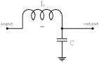

I've just got the last few bits of my first FPV250 working. Here's how to build your own FPV250 for under $200 (not including the camera). First a few photos of what you'll end up with at the end of this article.
Even though this post is titled "CleanFlight," you should definitely use the new CleanFlight fork "BetaFlight." It isn't actually a "beta" product as the name would suggest, but a massive improvement in flight performance from CleanFlight.
It's so awesome, even your grandpa will want to fly it!
Hardware
Stuff that goes on the quad copter:
Checkout my flight controller overview for more details on picking the right flight controller.
ZMR250 Frame or the nicer Diatone 37, which has a power distribution board.
12mm M3 Nylon Screws, that's 12mm long, 3mm diameter shaft.
- The frame comes with steel screws, but we'll use these nylon ones instead. This allows the screws to break instead of the frame. It's already saved my frame, more than once.
DYSBE1804 Motors, these are awesome. Running on a 4s battery, they generate about 570g of thrust per motor at around 11amps according to the internet. Checkout my full motor comparison here in this Google sheet.
I used 12a Blueseries ESCs, but the next build I'm going to use LittleBee ESCs, which are light, have a dedicated driver chip and come preloaded with BlHeli bootloader.
Super durable KingKong props, get a bunch, they're cheap, work great and you'll go through quite a few learning to fly.
Diatone 5030 Clear Props, get a bunch, they're cheap, work great and you'll go through quite a few. I ordered 10 sets of 4, but I think I'll get some more shortly.
If you've got your HAM license, get a OrangeLRS. If not, go for a standard 2.4Ghz system that has PPM and RSSI.
- DSMX RX
- OrangeLRS Tx
- OrangeLRS Rx which we'll flash with OpenLRSng.
- You won't need the OrangeRX USB Update Kit if you have a USB/UART adapter already.
- Or if you want to save yourself a few bucks and open up your transmitter to install the module (it just needs power + PPM out from the transmitter) try these DIY TX and RX modules. They just don't come with the fancy case.
- PPM is where all the channels are output on one wire
- RSSI is signal strength indicator. It tells you how well your copter can hear your controller.
MinimOSD -- Optional, but highly useful. Displays text over your video feed showing you current orientation, battery and radio signal strength data. Also, it makes you feel like a fighter pilot.
Micro MinimOSD -- A more compact version of the minimosd above.
1x 10k resistor and 1x 2.2k resistor for the voltage divider on the battery monitor input. Necessary for the CC3D, not for the Naze/Flip32 -- Optional, but highly useful. This allows you to see the current voltage of your battery in your OSD.
Current Sensor
- APM power module and current sensor -- this has a built in battery elimiation circut to provide power to your board and a current sensor. Optional, but useful. Let's you see your current battery consumption in your OSD.
- ACS758LCB-100U Hall Effect Current Sensor, also available on eBay -- An alternative to the APM power module
For the LC Filter, an Inductor, 25v 3300uf Capacitor and diode.
- You'll need 1 diode, a capacitor or two totaling around 1000uF, a ferrite ring or pre-wound inductor and two more ferrite beads. Some notes online say you can skip the diode, DO NOT OMIT THE DIODE! There is a risk that the motors could draw enough amperage to drain the capacitors and potentially cause a degradation in video quality, possibly making it impossible to see when you're flying.
- The two extra ferrite beads are for reducing interference on the camera cable and the cable between osd and transmitter, these may be safely omitted if you don't get any interference on these lines.
Fpv Gear:
The Xiaomi Yi camera, literally translated "small ant," got great reviews and it can record 1080p60, which is a higher frame rate than a Go Pro at that resolution. Awesome!
Ts5828 600mw Video Transmitter or the less expensive 200mw version
This Boscam RC805 Video Receiver is what I use on my DIY Go FPV Goggles
Though not strictly necessary, Circular Polarized Antennas are totally worth the money. Note these are Left Hand polarized, which I prefer since most people fly Right Hand polarized. The polarization should match on the receiver and transmitter. This only matters if you already have Right Hand polarized gear, maybe you want to keep it all the same?
Note, to make your own antenna grab some .023-.025" copper clad steel mig welding wire.
Tools:
Arduino Pro Mini for programming the ESCs with BlHeli
USB to UART/Serial Adapter for flashing anything without a USB plug. I prefer the CP2102 over the FTDI since they're cheaper and over the Chinese FTDI clones, since the driver is less sketchy.
Here's the full list:
Assembly
Let's build it!
Flash ESCs with BlHeli
Flash flight controller with CleanFlight
For either method, my PIDS in the configuration section are for the PID controller 1 (MultiWii Rewrite) version 1.9, which is currently a release candidate.
Download the configurator, plugin the board, pick the latest version and flash.
Flash radio receiver and transmitter modules with OpenLRSng
Read this guide on setting up OpenLRSng and re-flashing the bootloader if necessary.
LC Filter
Grab your inductor and capacitor(s), I pulled mine off this old NetGear router:
If you're using multiple capacitors, wire them in parallel.
This is what you want to wire:

So, wire a positive wire from the battery XT-60 plug, solder that to your inductor, then wire that to the positive side of the capacitor (the side without the white stripe), then solder that to the plug V-in on the linear voltage regulator and to the plug for your video TX (or solder it straight to the video TX).
The ground from the batter goes to the negative side of the capacitor, to the ground on the linear voltage regulator then to the video TX
The Vout of the 5v linear voltage regulator goes to the flight controller, OpenLRS receiver and to the minimosd.
I'm using an LM7805 linear voltage regulator from eBay. This should output about 1am, which is plenty.
Note that my video transmitter takes 12v+ so I do not send it through the LM7805, but wire it in straight after the LC filter.
The original rcgroups post on Sander's LC filter is here, if you want to read more: http://www.rcgroups.com/forums/showthread.php?t=1339007
Power
Solder the ESCs to your motors, cutting the motor wires to the proper length. I left mine a little too long, so I had to twist the wires a bit to get the ESCs to fit comfortably on the arms.
This is what my wiring harness looked like before I attached it to the frame. Measure against the frame to make sure you get the lengths right:
Wire all the ESCs and your LC filter into your favorite battery plug. Maybe an XT-60?
Next, we'll build the frame. It starts like this.
- I found it easiest to solder the ESCS while attached to the arms
- Yes, it's 4am
- Once you've got it all wired, hook it up to the frame. Use your nylon bolts and nuts to attach the frame. When assembling the frame, I attached the arms by putting the bolt through the bottom plate, then through the arm, then attaching a nut, then the second bottom plate, then another nut. Using a nut sandwiched between the bottom plates ensures the arms will stay attached to one of the place in case of a crash and it allows room for wiring to pass between the plates.
- Done! This version had my old board camera on it
Setup
First ensure your receiver sends the proper minimum and maximum commands, and is centered, on the
For every channel: min = 1000us, max = 2000us and middle = 1500
This config assume you've configured OpenLRS to send rssi and channel 9 of the PPM stream, you've got BlHeli installed on your ESCs and you're using the 10k/2.2k voltage divider to run a 3s or 4s battery.
- Cleanflight CLI, open the CLI tab and paste this in.
# make the loop time faster
set looptime = 1600
# we'll configure rssi on channel 9
set rssi_channel = 9
# from the calculation we did
set vbat_scale = 54
# set min_check and max_check very close to the endpoints to avoid entering stick commands while flying
set min_check = 1020
set max_check = 1980
# set disarm_kill_switch to false, so we don't fall out of the sky
# throttle down if you really want to kill it
set disarm_kill_switch = 0
# turn the failsafe delay up to 3 sec, we'll wait this long before going into failsafe mode
set failsafe_delay = 30
# turn the failsafe run time down to 10 seconds, plenty of time to get on the ground with a fast decel
set failsafe_off_delay = 100
# figure out your safe descent speed
set failsafe_throttle = 1200
save
With a 10k:2.2k voltage divider, the vbat_scale is 54 the reason for this is in my minimosd post
Using the ACS758-100U sensor, the current sensor offset is 600mV (.6V) and the scale is 400mV (40mV/A). More info in my minimosd post
Cleanflight config

Cleanflight pids
- Turn
leveldown to45
- Turn
- Cleanflight mode setup, setup your switches however you see fit. I rarely fly in horizon or angle mode as I don't have them tuned well yet.
OSD
Checkout the Minim OSD setup guide. The OSD was the most time-consuming portion of the build as it included the most technical things to get right. I hope the Minim OSD setup guide will help you avoid these issues and get flying quickly.
You can also fly without an OSD, but I find the artificial horizon, battery monitoring and RSSI features extremely helpful when flying.
Failsafe
To ensure your craft does not disarm during flight, ensure your transmitter does not transmit any signals less than
rx_min_usec(default: 985) or greater thanrx_max_usec(default: 2115).On my OpenTx 9x, I use the
servossettings page to adjust the endpoints to 1000 -> 2000Be sure to bench test the whole right, but most importantly the failsafe. If the failsafe doesn't work, you could have a fly-away as most receivers continue transmit the last signal received when the connection is lost. Say you throttle up and lose signal, it will just keep flying :)
- Remove the props. Serious. Don't do this with the props on. Your copter could kill something.
- Start the copter, arm and throttle up. Ensure your signal is good by checking the RSSI in your goggles or via the configurator.
- Turn off your transmitter. Yep. Turn it off.
- You should see the led on the OpenLRS RX switch and the motors should power down to their failsafe level (1200 by default). The motors should then turn off after the defined
failsafe_off_delay(200 by default). - Turn your transmitter back on and try to re-arm. It should refuse to re-arm until it is power-cycled.
- Next, test the
failsafe_delayto ensure a momentary glitch doesn't trigger a failsafe by starting the coptor, throttleing up then turning your transmitter off and then turning it back on immediatly. The copter should not go into failsafe mode. Ensure this by waiting longer thanfailsafe_off_delayand powering/up down, looking for a response from the motors.
Tuning
If you want to tune your PIDS, follow Oscar's directions: http://blog.oscarliang.net/quadcopter-pid-explained-tuning/
For P gain, I first start low and work my way up, until i notice it’s producing oscillation. Fine tune it until you get to a point it’s not sluggish and there is not oscillation.
For the I gain, again start low, and increase slowly. Roll and pitch your quad left and right, pay attention to the how long does it take to stop and stabilize. You want to get to a point where it stabilize very quickly as you release the stick and it doesn’t wander around for too long. You might also want to test it under windy condition to get a reliable I-value.
For D gain, it can get into a complicated interaction with P and I values. When using D gain, you need to go back and fine tune P and I to keep the plant well stabilized.
Quadcopters are symmetric so you can set the same PID Gain values for Pitch, and Roll. The value for Yaw is not as important as those of Pitch and Roll so it’s probably OK to set the same values as for Pitch/Roll to start with (even it might not be the best).After your multicopter is relatively stable, you can start alter the Yaw gains. For non-symmetric multicopter like hexacopter or tricopter, you might want to fine tune the pitch and roll separately, after you have some flight experience.
Fly
Start with a low hover, make sure your PIDs are good and the solders are all solid. I had lots of random power-off issues. They seem to be solved now after ensuring my transmitter lower limits were between 1000 and 2000 and re-soldering my current sensor (I think if the solder was torqued enough, it would power down for a split second).
Oscar has some great tips here.
Finally a shout out to FliteTest, the folks that originally got me into this. They have a great video on learning to fly. Mad awesome work.